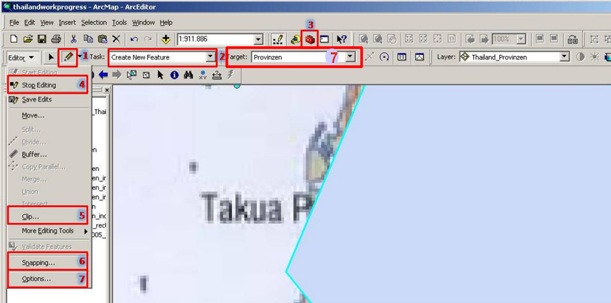
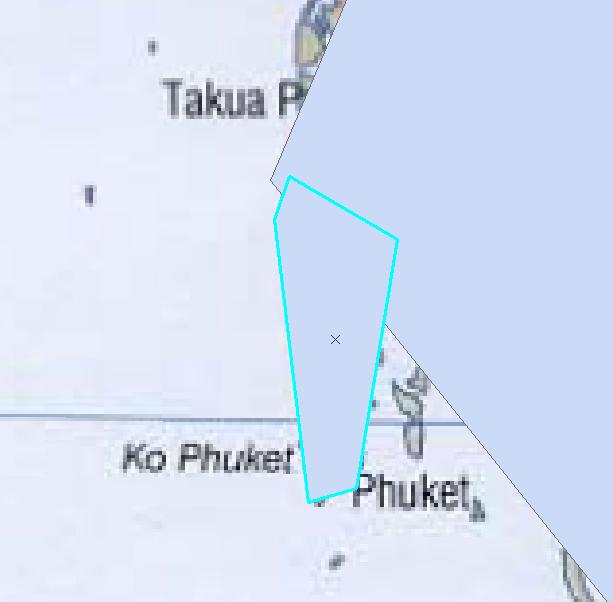
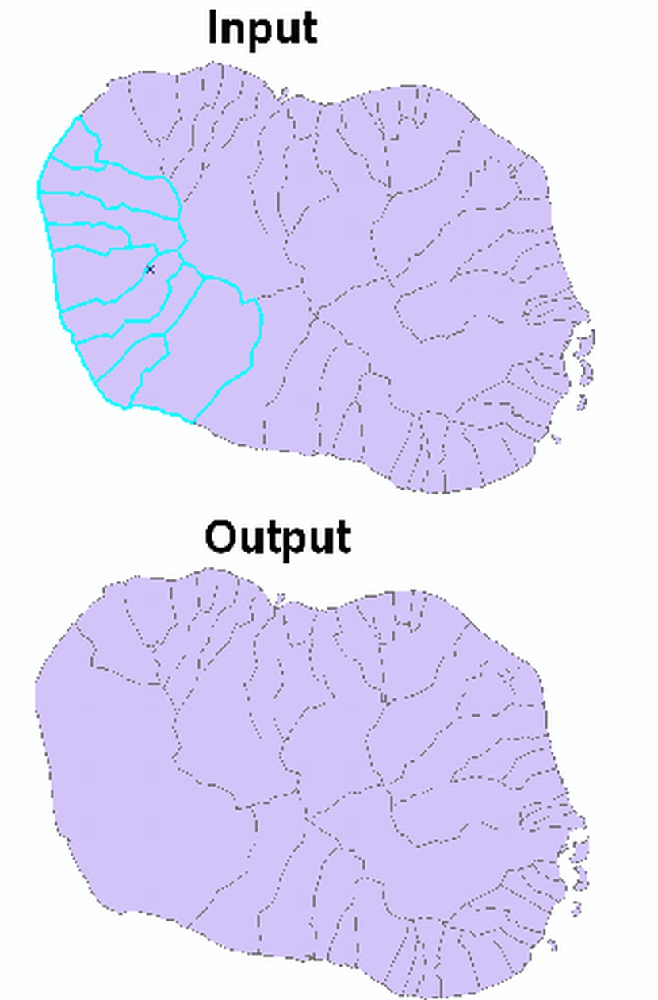
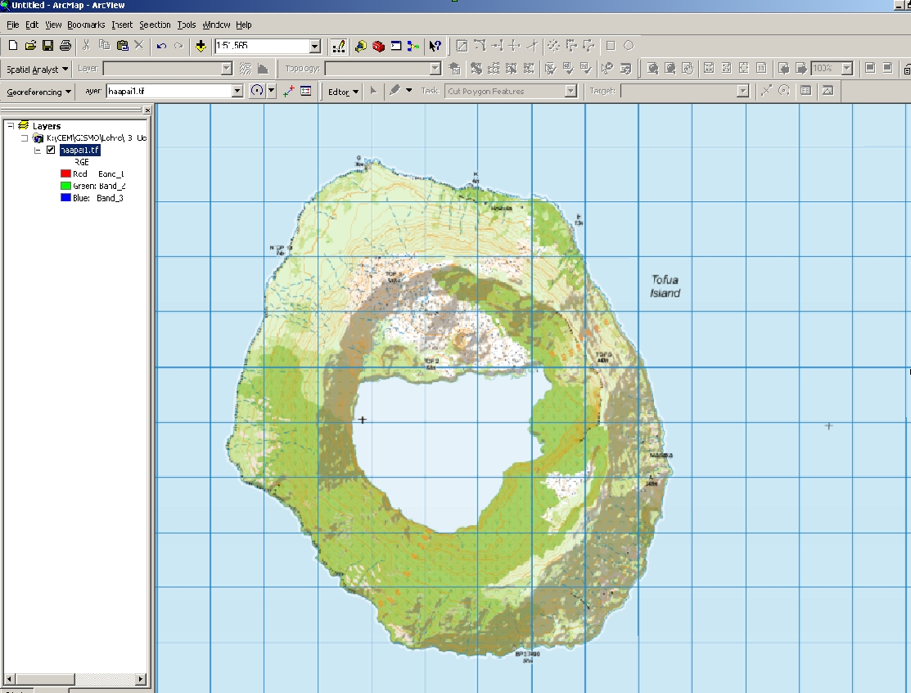

Wissens-Check
Sie möchten auf Basis dieser von Ihnen bereits rektifizierten Karte die Provinzgrenzen Thailands digitalisieren um diesen spätere sozioökonomische Attribute zuweisen zu können. Wie gehen Sie vor?
Welches der genannten Dateiformate halten Sie für geeignet (falls Sie
nicht in einer Geodatabase arbeiten)?
?
Sie haben noch nicht alle richtigen Antworten angekreuzt!
Bei der Erstellung achten Sie auf:
?
Sie haben noch nicht alle richtigen Antworten angekreuzt!
Das Einladen des Shapefiles in den Datenrahmen von ArcMap erfolgt mit
Hilfe von:
Sie haben noch nicht alle richtigen Antworten angekreuzt!
Zur Digitalisierung bzw. zum Editieren von Daten:
Welche Einstellungen müssen Sie zur Erfassung eines Polygons vor dem
Digitalisieren des ersten Stützpunktes vornehmen?

?
Sie haben noch nicht alle richtigen Antworten angekreuzt!
Um einen nutzbaren Datensatz zu erzeugen, sollte auf ein korrekte
Topologie der Polygone geachtet werden. Was ist damit gemeint?
Was ist an der vorhandenen Digitalisierung zweier Provinzen Thailands
im folgenden Bild problematisch?

Sie haben noch nicht alle richtigen Antworten angekreuzt!
Sie haben noch nicht alle richtigen Antworten angekreuzt!
Zur Erfassung der Bevölkerungszahl der Provinzen ist eine Anpassung
der Attributtabelle notwendig. Wie gehen sie vor?
Die Bevölkerung der Provinzen schwankt zwischen 100.000 und
6.000.000. Sie wollen diese Werte später in der Karte aufbereitet
darstellen. Welche Eigenschaften weisen Sie dem Feld sinnvollerweise zu?
?
?
Sie haben noch nicht alle richtigen Antworten angekreuzt!
Nennen sie Eigenschaften die auf eine File Geodatabase
zutreffen:
Sie haben noch nicht alle richtigen Antworten angekreuzt!
Aus welchen drei fundamentalen Organisationseinheiten/Datenstrukturen
ist eine Geodatabase aufgebaut?
Sie haben ein Polygonshapefile mit mehreren Features als Input und
wollen diese miteinander verbinden, so dass Sie als Output ein
Polygonshapefile erzeugen. Welches Werkzeug nutzen Sie?

?
?
Sie haben noch nicht alle richtigen Antworten angekreuzt!
Sie haben die Datei haapai1.tif in ArcGis eingeladen. Vorher haben
sie die Karte anhand des Koordinatennetzes referenziert und nun wollen Sie
die Insel Tofua nach den Kategorien Landmasse und Calderasee
abdigitalisieren, welche erweiterten Digitalisierwerkzeuge können Sie
nutzen, um die Arbeit zu vereinfachen? Mehrfachnennungen sind
möglich.

?
?
?
?
?
?
Sie haben noch nicht alle richtigen Antworten angekreuzt!